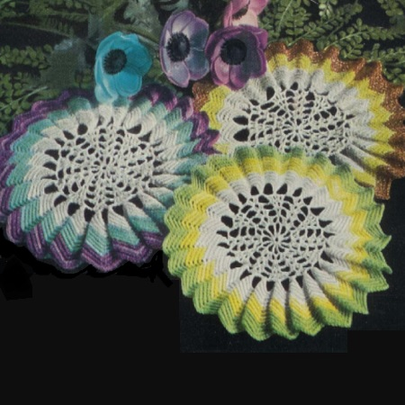

Sunburst 2 Doily Pattern
MATERIALS:
AMERICAN THREAD COMPANY The Famous "PURITAN" STAR SPANGLED MERCERIZED CROCHET COTTON, Article 40
AMERICAN THREAD COMPANY — The Famous "STAR" SPANGLED MERCERIZED CROCHET COTTON, Article 40 1 ball
each Gold & Silver Spangle, Aqua Spangle and Purples and Silver Spangle. Approximate size: 9 inches in diameter or The Famous "PURITAN" MERCERIZED CRO-CHET COTTON, Article 40. 1 ball each White, Turquoise and Shaded Purples or colors of your choice. Approximate size: 7 1/2 inches in diameter. Steel crochet hook No. 7.
1st Round: With Gold Spangle or White chain (ch) 6, join to form a ring, ch 7, treble crochet (trc) in ring, * ch 3, trc in ring, repeat from * 9 times, ch 3, join in 4th stitch (st) of ch.
2nd Round: Slip stitch (sl st) to loop of shell, ch 3, 1 double crochet (dc) , ch 3, 2 dc in same loop, ch 2, dc in next loop, ch 2, * 2 dc, ch 3, 2 dc in next loop (shell), clt 2, dc in next loop, ch 2, repeat from * all around, join in 3rd st of ch.
3rd Round: Sl st to loop of shell, ch 3, 1 dc, ch 3, 2 dc in same loop, ch 3, skip the next loop, 1 dc, ch 1, 1 dc in next dc, ch 3, * shell in next shell, ch 3, skip the next loop, 1 dc, ch 1, 1 dc in next dc, ch 3, repeat from * all around, join in 3rd st of ch.
4th Round: Sl st to loop of shell, ch 3, 1 dc, ch 3, 2 dc in same loop, ch 4, skip the next loop, dc in next dc, ch 1, dc in next ch 1 space, ch 1, dc in next dc, ch 4, * shell in next shell, ch 4, skip the next loop, dc in next dc, ch 1, dc in next ch 1 space, ch 1, dc in next dc, ch 4, repeat from * all around, join in 3rd st of ch.
5th Round: Sl st to loop of shell, ch 3, 1 dc, ch 3, 2 dc in same loop, * ch 4, skip the next loop, dc in next dc, ch 1, dc in next ch 1 space, ch 1, dc in next dc, ch 1, dc in next ch 1 space, ch 1, dc in next dc, ch 4, shell in next shell, repeat from * all around ending to correspond, join in 3rd st of ch.
6th Round: Sl st to center of loop of shell, * ch 12, single crochet (sc) in next loop, ch 12, skip next 2 dc, sc in next dc, ch 12, skip next 2 dc, sc in next ,loop, ch 12, sc in loop of next shell, repeat from * all around ending to correspond, join in last sl st.
7th Round: Ch 1 and work 17 sc over each loop, join in 1st sc.
8th Round: Ch 1, working in back loop of sts through-out work 1 sc in each of the next 7 sc, 3 sc in next sc, 1 sc in each of the next 7 sc, * skip next 2 sc, 1 sc in each of the next 7 sc, 3 sc in next sc, 1 sc in each of the next 7 sc, repeat from * all around, join in 1st sc. Repeat the last round for the remainder of Doily working 2 more rounds in Gold Spangle or White, 4 Rounds in Aqua Spangle or Turquoise and 4 Rounds Purple and Silver Spangle or Shaded Purples.
HOME